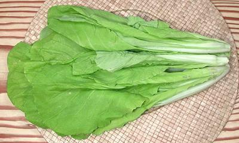

Taiwan Bok Choy

[Taiwan Pak Choy; Brassica rapa Group Chinensis]
A very tender bok choy with light green to slightly yellowish leaves. The
stems, which are whiter than those of Shanghai bok choy, are almost as
tender as the leaves - it's almost like lettuce. I understand it was
recently developed in Taiwan and has just started appearing in markets
here. The photo specimens were bought from an Asian market in Los Angeles
in a 1 pound 5 ounce bag.
More on Asian Greens.
Buying:
This green is still not common, even in the Asian
markets in Los Angeles, but it does appear now and then.
Storage:
Store in the refrigerator loosely bagged in
plastic and use as soon as possible - The leaves start to spot
immediately and appearance will degrade rapidly.
Prep:
It is not necessary to separate the stems from the
leaves as they are both rather tender.
Cooking:
These greens are used in soups and stir fries.
Cooking time should be minimum, just enough to wilt the leaves and stems.
cb_boktwz 100317 - www.clovegarden.com
©Andrew Grygus - agryg@clovegarden.com - Photos on this
page not otherwise credited are © cg1 -
Linking to and non-commercial use of this page permitted